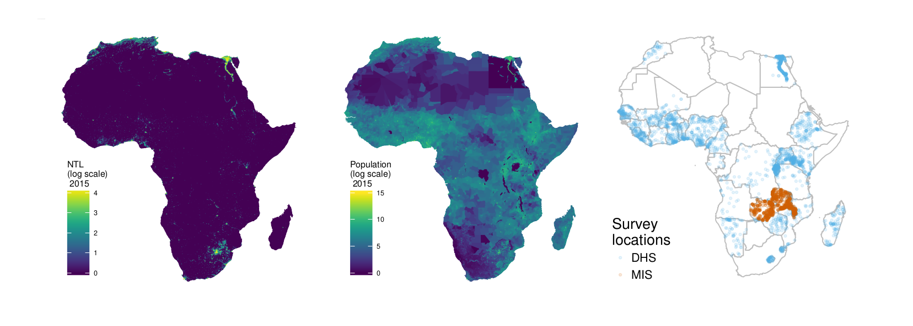
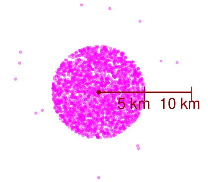
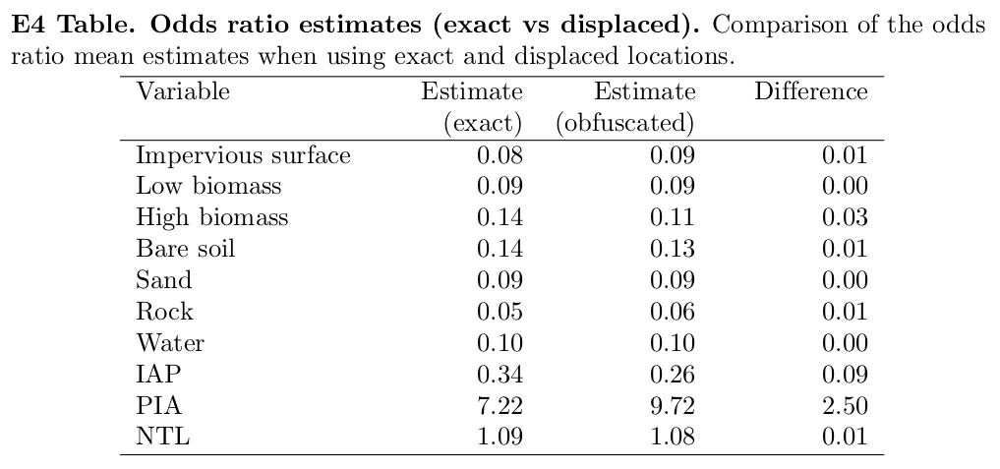
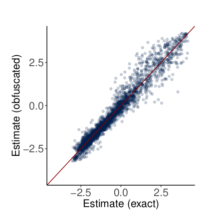
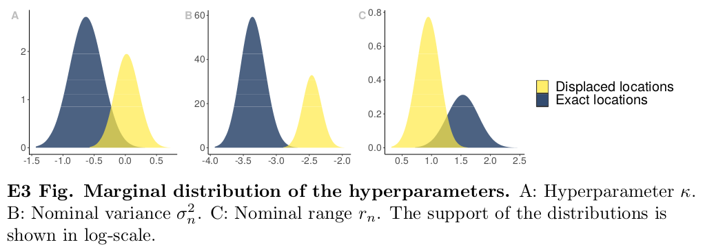
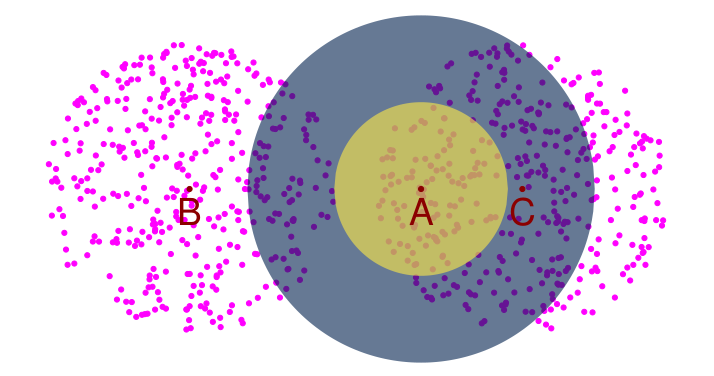

Sensitivity Analysis of Data Obfuscation
November 6, 2021
Some time ago I worked on a project to estimate population access to electricity in Africa. This was a very interesting project where we used georeferenced data from DHS surveys, World Population Data, Land Use and Land Cover images and Nighttime Light (NTL) satellite images. It took me a while, but it finally got published in 2019 ( link to publication here). And since this was a peer reviewed publication, I had to put a good amount of effort addressing the reviewers comments and questions. One of the reviewers questions in particular forced me to think carefully about the methodology I was using and made me to learn something I found quite interesting. This post is about that question in particular. Just for fun, I'll go through this explanation using the STAR method (Situation, Task, Action, Result).
Situation
We were modeling annual Household Electricity Access in Africa between 2000 and 2013. The objective of the research was to produce a raster file per year with the probability of electricity access for the whole continent and Madagascar. One of the challenges for doing this was to handle data with different resolutions. For example, NTL and population data being expressed in pixels of 1 Km x 1 Km and DHS data points associated to GPS coordinates.
There was an additional layer of complexity when handling this data. DHS survey data provided information whether or not households had access to electricity. This was the variable we wanted to predict for the whole continent. The complexity arose from the fact that for privacy protection the geolocation of the households are never reveled. First the coordinates are aggregated into clusters. Then the coordinates of cluster centroid are randomly displaced. Rural points are randomly offset up to 5 Km, with 1% moved up to 10 Km; and urban points are moved up to 2 Km. This means that our target variable (electricity access) and our input variables (NTL, population, land cover) were not aligned.
DHS has already established guidelines to minimize the impact of GPS points obfuscation. It is suggested to not compute covariates using direct cell extraction (pixel value that corresponds to the GPS location), but using an average value across a 5 Km buffer around the GPS location reported. That sounds easy, but was I sure this was adequate for this specific application? How could I measure the impact of obfuscation? To be honest, I was happy to not think much about this and just follow the guidelines, but then one the reviewers brought up the same question: "If points are randomly displaced, how can they be used in the statistical model?".
Task
I had a Geostatistic model that aimed to describe the relation between binomial realizations \(y\) and a set of covariates \(x\), but I was not sure if the GPS points associated to \(y\) were indeed contained in the squares (pixels) associated to \(x\). Hence I needed to define a strategy that lead to a measurable outcome which could help us understand the impact of using a 5 Km buffer. Only then I would be able to answer if this points could be used in a statistical model.
Action
I performed a simulation analysis to assess the impact of the locations displacement. First I generated a synthetic dataset of 10,000 observations representing cluster centroids without displacement. Then I displaced the centroids of this dataset following DHS methodology (see image below). Now that I had two datasets, with and without displacement, I fitted Geostatistic model to both and compared the resutls. The details of the steps for simulating the dataset can be found here.
Result
When comparing the estimates of the fixed effects I confirmed that there was consistency in between them when using the exact and displaced locations.
I also confirmed that the target variable estimates were aligned. The image below shows the inverse logit of the probability of electricity access with obfuscated data vs non-obfuscated data.
Finally, this is the part that I found the most interesting of all this small quest. The Geostatistic model used has a couple of hyperparameters that characterize the spatial variability: nominal variance and nominal range. The nominal variance of the model with obfuscated data turned out to be larger, which means a higher variability of the spatial random field. This was possibly driven by the noise due to the locations displacement. The nominal range of the spatial covariance ended up being smaller when modeling obfuscated data. This means that the radius at which two points presented a correlation above 0.1 was shorter when data had been displaced.
Initially this last result seemed counter intuitive to me. I would expect that the displacement of locations would result in a larger nominal range. However a reduction in the range prevented correlating points that would be assumed to be correlated if using the range of the non-obfuscated data. In the end I understood it! The model with obfuscated data was relying less on the proximity of observations. This may be more adequate considering that we are not certain about the true location of the data. And at the same time this lack of certainty could be inducing a larger nominal variance.
Below is an image that helps explain this. The red points represent the actual locations of three observations. The radius of the blue circle represents a hypothetical large nominal range. All points within the blue circle are correlated with A (\(\rho > 0.1\) to be more precise). That is the case of point C, but not of point B. The magenta dots represent potential displaced locations of points B and C. For the sake of this example we do not displace point A. If we use the large nominal range, point A will be still correlated with most of the displaced locations of C. In addition, A will also be assumed to be correlated with some displaced locations of B (which is wrong). However, if instead we use a short nominal range (radius of the yellow circle), A will be considered to be correlated only to a few displaced locations of C, and it will no longer be correlated with any of the displaced locations in B. I think this change in the hyperparameters posteriors and what they represent is really cool.
This sensitivity analysis only got to be part of the Supplement of the manuscript, but now here is a small post dedicated to it.